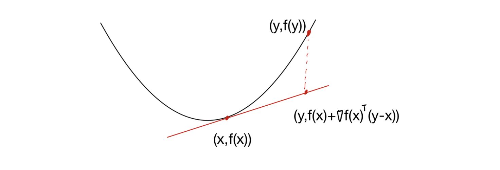

Introduction
지난 포스트들에서는 Convex Set과 Convex Function의 정의를 다루었습니다. 하지만 정의(\(f(\lambda x + (1-\lambda)y) \le \dots\))만 사용하여 어떤 함수가 볼록인지 판별하는 것은 계산상 매우 번거롭습니다.
함수가 미분 가능(Differentiable)하다면, 우리는 Gradient(기울기)나 Hessian(곡률) 정보를 이용해 훨씬 쉽게 볼록성을 확인할 수 있습니다. 이번 포스트에서는 Convex Function의 First-order(1차) 및 Second-order(2차) Characterization을 정리하고 증명합니다.
1. First-order Characterization
미분 가능한 함수 \(f\)가 Convex가 되기 위한 첫 번째 조건은, 어느 점에서의 접선(Tangent line/hyperplane)을 그려도 함수가 그 접선보다 항상 위에 있어야 한다는 것입니다.
Theorem 1.17 (First-order Condition)
미분 가능한 함수 \(f: \mathbb{R}^d \to \mathbb{R}\)가 Convex일 필요충분조건은 \(\text{dom}(f)\)가 Convex이고, 모든 \(x, y \in \text{dom}(f)\)에 대해 다음이 성립하는 것이다.
\[f(y) \ge f(x) + \nabla f(x)^\top (y-x)\]
이 식의 우변 \(f(x) + \nabla f(x)^\top (y-x)\)는 \(x\)에서의 1차 테일러 근사(First-order Taylor approximation)입니다. 즉, 볼록 함수는 자신의 1차 근사보다 항상 크거나 같습니다(Global underestimator).

1.1 Proof
이 증명은 \(d=1\)인 경우(일변수 함수)를 먼저 보이고, 이를 이용해 일반적인 \(d\)차원으로 확장하는 방식을 사용합니다.
Part 1: \((\Rightarrow)\) Convex \(\implies\) Inequality
Step 1: 일변수 함수 (\(d=1\)) \(f\)가 Convex이므로 정의에 의해 임의의 \(\lambda \in (0, 1]\)에 대해 다음이 성립합니다. \[f(x + \lambda(y-x)) = f((1-\lambda)x + \lambda y) \le (1-\lambda)f(x) + \lambda f(y)\]
\(f(x)\)를 이항하고 양변을 \(\lambda\)로 나눕니다. \[f(y) - f(x) \ge \frac{f(x + \lambda(y-x)) - f(x)}{\lambda}\]
이제 \(\lambda \to 0^+\) 극한을 취합니다. \(f\)는 미분 가능하므로 우변은 도함수의 정의가 됩니다. \[f(y) - f(x) \ge \lim_{\lambda \to 0^+} \frac{f(x + \lambda(y-x)) - f(x)}{\lambda} = f'(x)(y-x)\] 정리하면, \(f(y) \ge f(x) + f'(x)(y-x)\)입니다.
Step 2: 다변수 함수 (General case) 두 점 \(x, y\)를 잇는 선분 위에서의 함수 \(g(\lambda)\)를 정의합니다 (Restriction to a line). \[g(\lambda) := f(x + \lambda(y-x)), \quad \lambda \in [0, 1]\]
\(f\)가 Convex이면 \(g\) 또한 Convex입니다. (선형 결합의 합성은 Convexity를 보존함) 또한, Chain rule에 의해 \(g\)는 미분 가능하며 도함수는 다음과 같습니다. \[g'(\lambda) = \nabla f(x + \lambda(y-x))^\top (y-x)\]
\(d=1\)인 경우의 결과를 \(g\)에 적용합니다. (\(g(1) \ge g(0) + g'(0)(1-0)\)) * \(g(1) = f(y)\) * \(g(0) = f(x)\) * \(g'(0) = \nabla f(x)^\top (y-x)\)
따라서, \(f(y) \ge f(x) + \nabla f(x)^\top (y-x)\)가 성립합니다.
Part 2: \((\Leftarrow)\) Inequality \(\implies\) Convex
\(x, y \in \text{dom}(f)\)와 \(\lambda \in [0, 1]\)에 대해 \(z = \lambda x + (1-\lambda)y\)라고 합시다. 주어진 부등식을 \(z\)를 기준으로 \(x\)와 \(y\)에 각각 적용합니다.
- \(f(x) \ge f(z) + \nabla f(z)^\top (x-z)\)
- \(f(y) \ge f(z) + \nabla f(z)^\top (y-x)\)
첫 번째 식에 \(\lambda\), 두 번째 식에 \((1-\lambda)\)를 곱하여 더합니다. \[ \begin{aligned} \lambda f(x) + (1-\lambda)f(y) &\ge f(z) + \nabla f(z)^\top \underbrace{[\lambda(x-z) + (1-\lambda)(y-z)]}_{= 0} \\ &= f(z) = f(\lambda x + (1-\lambda)y) \end{aligned} \] \(\nabla f(z)\) 뒤의 항이 0이 되는 이유는 \(z\)가 \(x, y\)의 내분점이기 때문입니다. 따라서 정의에 의해 \(f\)는 Convex입니다.
2. Monotonicity of Gradient
또 다른 1차 조건은 Gradient의 변화 방향에 관한 것입니다. 이를 Monotonicity of Gradient(기울기의 단조성)라고 합니다.
Theorem 1.18
미분 가능한 함수 \(f\)가 Convex일 필요충분조건은 다음이 성립하는 것이다. \[(\nabla f(x) - \nabla f(y))^\top (x - y) \ge 0\] 모든 \(x, y \in \text{dom}(f)\)에 대하여.
이 식은 \(x\)에서 \(y\)로 이동할 때(\(x-y\)), Gradient의 차이(\(\nabla f(x) - \nabla f(y)\))가 이동 방향과 같은 방향(내적이 양수)임을 의미합니다. 1차원에서는 도함수 \(f'\)이 증가 함수(Non-decreasing)라는 뜻과 같습니다.
2.1 Proof
Part 1: \((\Rightarrow)\) Using Theorem 1.17 Thm 1.17에 의해 다음 두 식이 성립합니다. 1. \(f(y) \ge f(x) + \nabla f(x)^\top (y-x)\) 2. \(f(x) \ge f(y) + \nabla f(y)^\top (x-y)\)
두 식을 더하면: \[f(y) + f(x) \ge f(x) + f(y) + \nabla f(x)^\top (y-x) + \nabla f(y)^\top (x-y)\] \[0 \ge (\nabla f(x) - \nabla f(y))^\top (y-x)\] 양변에 \(-1\)을 곱하고 벡터 방향을 바꾸면 \((\nabla f(x) - \nabla f(y))^\top (x-y) \ge 0\)을 얻습니다.
Part 2: \((\Leftarrow)\) Using Integral Mean Value Theorem 이 방향의 증명은 미적분학의 기본 정리를 사용합니다.
\[\begin{aligned} f(y) - f(x) &= \int_0^1 \frac{d}{d\lambda} f(x + \lambda(y-x)) \, d\lambda \\ &= \int_0^1 \nabla f(x + \lambda(y-x))^\top (y-x) \, d\lambda \end{aligned}\]
가정 \((\nabla f(u) - \nabla f(v))^\top (u-v) \ge 0\)을 이용하기 위해, 적분 내부를 변형해봅시다. \(u = x+\lambda(y-x), v=x\)로 두면 \(u-v = \lambda(y-x)\)이므로, \[\langle \nabla f(x+\lambda(y-x)) - \nabla f(x), \lambda(y-x) \rangle \ge 0\] \(\lambda > 0\) 이므로 나누면, \[\nabla f(x+\lambda(y-x))^\top (y-x) \ge \nabla f(x)^\top (y-x)\] 즉, 적분 안의 피적분 함수가 항상 \(\nabla f(x)^\top (y-x)\)보다 큽니다. 따라서, \[f(y) - f(x) = \int_0^1 (\dots) d\lambda \ge \int_0^1 \nabla f(x)^\top (y-x) d\lambda = \nabla f(x)^\top (y-x)\] 이는 Theorem 1.17의 조건이므로, \(f\)는 Convex입니다.
3. Second-order Characterization
함수가 두 번 미분 가능하다면(Twice differentiable), Hessian Matrix(이계도함수 행렬)의 성질을 통해 볼록성을 판별할 수 있습니다. 가장 강력하고 자주 쓰이는 조건입니다.
Theorem 1.19 (Second-order Condition)
두 번 미분 가능한 함수 \(f: \mathbb{R}^d \to \mathbb{R}\)가 Convex일 필요충분조건은 \(\text{dom}(f)\)가 Convex이고, 모든 \(x \in \text{dom}(f)\)에 대해 Hessian이 Positive Semidefinite (PSD)인 것이다.
\[\nabla^2 f(x) \succeq 0\]
3.1 Proof
Part 1: \((\Rightarrow)\) Convex \(\implies\) PSD
Step 1: 일변수 함수 (\(d=1\)) Thm 1.17에 의해 \(f(y) \ge f(x) + f'(x)(y-x)\)입니다. 반대로 \(x, y\)를 바꾸면 \(f(x) \ge f(y) + f'(y)(x-y)\)입니다. 두 식을 더하고 정리하면, \[(f'(y) - f'(x))(y-x) \ge 0 \implies \frac{f'(y) - f'(x)}{y-x} \ge 0\] \(y \to x\) 극한을 취하면 \(f''(x) \ge 0\)입니다.
Step 2: 다변수 함수 (General case) 임의의 방향 벡터 \(v \in \mathbb{R}^d\)에 대해 \(g(\lambda) = f(x + \lambda v)\)를 정의합니다. \(f\)가 Convex이면 \(g\)도 Convex이고, 1변수 결과에 의해 \(g''(0) \ge 0\)이어야 합니다. Chain rule을 두 번 적용하면: \[g'(\lambda) = v^\top \nabla f(x + \lambda v)\] \[g''(\lambda) = v^\top \nabla^2 f(x + \lambda v) v\] \(\lambda=0\)일 때, \(g''(0) = v^\top \nabla^2 f(x) v \ge 0\). 임의의 \(v\)에 대해 이차형식(Quadratic form)이 0보다 크거나 같으므로, \(\nabla^2 f(x)\)는 Positive Semidefinite입니다.
Part 2: \((\Leftarrow)\) PSD \(\implies\) Convex
미적분학의 기본 정리를 Gradient에 적용합니다. \[\nabla f(y) - \nabla f(x) = \int_0^1 \frac{d}{d\lambda} \nabla f(x + \lambda(y-x)) \, d\lambda\] \[= \int_0^1 \nabla^2 f(x + \lambda(y-x)) (y-x) \, d\lambda\]
양변에 \((y-x)\)를 내적합니다. \[\langle \nabla f(y) - \nabla f(x), y-x \rangle = \int_0^1 \underbrace{(y-x)^\top \nabla^2 f(\dots) (y-x)}_{\ge 0 (\because \text{PSD})} \, d\lambda \ge 0\]
적분 값이 0 이상이므로 \((\nabla f(y) - \nabla f(x))^\top (y-x) \ge 0\)이 성립합니다. 이는 Theorem 1.18(Monotonicity)의 조건이므로, \(f\)는 Convex입니다.
4. Summary
이번 포스트에서는 함수가 미분 가능할 때 볼록성을 판별하는 세 가지 주요 도구를 배웠습니다.
- First-order (Tangent line): \(f(y) \ge f(x) + \nabla f(x)^\top (y-x)\)
- 함수가 접평면 위에 떠 있어야 함.
- Monotonicity (Gradient): \((\nabla f(x) - \nabla f(y))^\top (x-y) \ge 0\)
- 기울기가 증가하는 방향이어야 함.
- Second-order (Hessian): \(\nabla^2 f(x) \succeq 0\)
- 모든 방향으로 곡률이 양수(아래로 볼록)여야 함.
실제 최적화 문제에서는 Second-order Condition(\(\nabla^2 f(x) \succeq 0\))이 가장 빈번하게 사용됩니다.